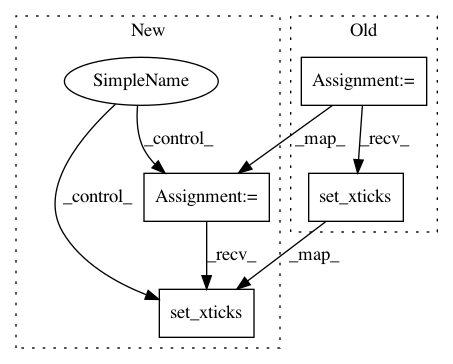

f701967d1c4ecd7f679dd9e9e09388c8960e8fcf,examples/showcase/xkcd.py,,,#,11
Before Change
// Based on "The Data So Far" from XKCD by Randall Monroe
// http://xkcd.com/373/
fig = plt.figure()
ax = fig.add_axes((0.1, 0.2, 0.8, 0.7))
ax.bar([0, 1], [0, 100], 0.25)
ax.spines["right"].set_color("none")
ax.spines["top"].set_color("none")
ax.xaxis.set_ticks_position("bottom")
ax.set_xticks([0, 1])
ax.set_xlim([-0.5, 1.5])
ax.set_ylim([0, 110])
ax.set_xticklabels(["CONFIRMED BY\nEXPERIMENT", "REFUTED BY\nEXPERIMENT"])
plt.yticks([])
After Change
// Based on "The Data So Far" from XKCD by Randall Monroe
// http://xkcd.com/373/
fig = plt.figure()
ax = fig.add_axes((0.1, 0.2, 0.8, 0.7))
ax.bar([0, 1], [0, 100], 0.25)
ax.spines["right"].set_color("none")
ax.spines["top"].set_color("none")
ax.xaxis.set_ticks_position("bottom")
ax.set_xticks([0, 1])
ax.set_xlim([-0.5, 1.5])
ax.set_ylim([0, 110])
ax.set_xticklabels(["CONFIRMED BY\nEXPERIMENT", "REFUTED BY\nEXPERIMENT"])
plt.yticks([])
In pattern: SUPERPATTERN
Frequency: 3
Non-data size: 4
Instances
Project Name: matplotlib/matplotlib
Commit Name: f701967d1c4ecd7f679dd9e9e09388c8960e8fcf
Time: 2018-02-17
Author: quantum.analyst@gmail.com
File Name: examples/showcase/xkcd.py
Class Name:
Method Name:
Project Name: matplotlib/matplotlib
Commit Name: 8cd9a3b5bbaa0cdb3608d704c2760186f3581946
Time: 2018-02-15
Author: derek.tropf@gmail.com
File Name: examples/showcase/xkcd.py
Class Name:
Method Name:
Project Name: rodluger/starry
Commit Name: 03b04a9921afe6953d460c49e39067326e8a73a8
Time: 2018-05-10
Author: rodluger@gmail.com
File Name: tex/figures/autodiff.py
Class Name:
Method Name: